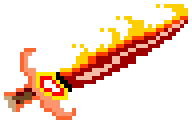
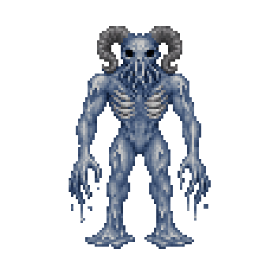
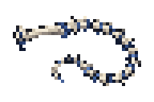
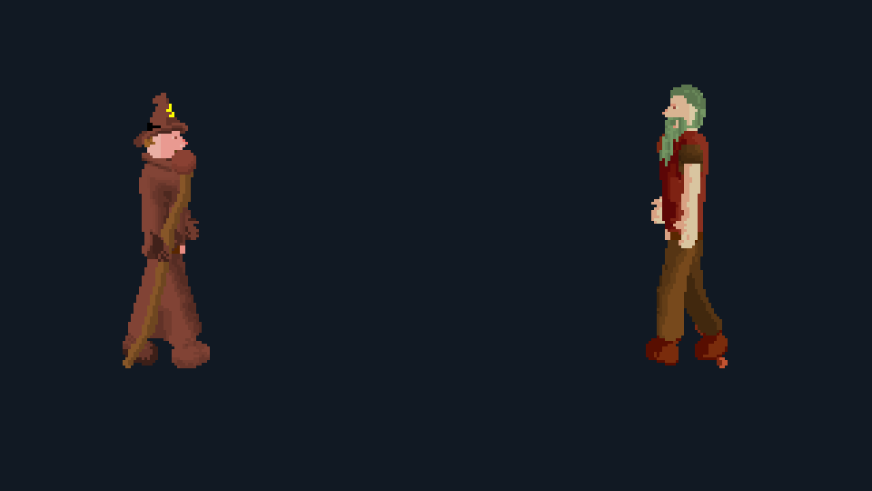
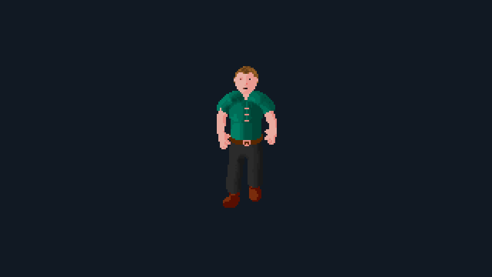
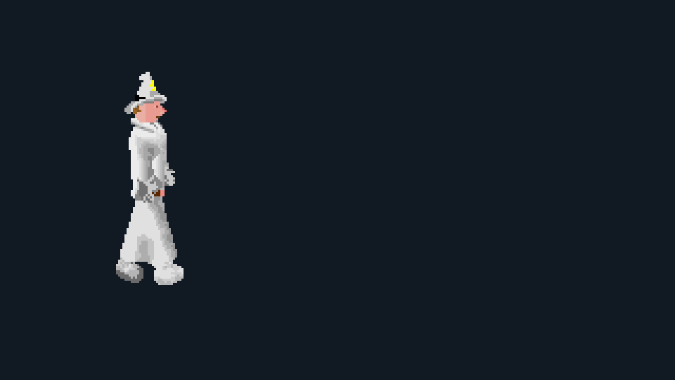

If I could think of a way to change it, I did. It’s still Classic at its core, but a whole new way to experience it. Thousands of new items, reworked combat, brand-new skills, reworked old skills, and more to come! It’s free, open source, and publicly hosted for anyone to drop in. Feel free to check out the Discord, too!
The categories below are the short version. Pick one to jump straight to it; more subjects will be added as their showcase media is ready.
01 / Equipment
There is a lot more stuff to find.
New weapons, armour, tools, jewellery, resources, and crafting paths mean there is nearly always another odd or useful thing waiting around the corner.

Elemental swords
New elemental swords added as rare drops.
02 / Slayer
The Slayer Tower has opened its doors.
Join the Slayer's guild and work your way up the ranks. Harvest special monster parts from familiar and new enemies and to assemble new gear!

Abyssal demon

Three combat styles, three new prizes. The Abyssal Whip, Thunder Spire Staff, and Leaching Bow are a few convincing reasons to head upstairs.
Showcase timing is illustrative rather than a recording of live combat cadence.
03 / Combat
Combat has been completely overhauled.
Decoupled melee means you and your friends can gang up on enemies—but, as you can see here, they can gang up on you too. Don’t worry: you have plenty of new tools at your disposal.
01 / Melee
Scythes sweep the field.
The old holiday Scythe has grown into a full line of weapons. Every one attacks all enemies surrounding its wielder.
02 / Ranged
Three targets, one throw.
Shuriken are new thrown weapons that can strike three enemies at once—and they can be poisoned.
03 / Magic
Familiar spells, broader blasts.
Iban Blast now hits groups. Other familiar spells have received similar upgrades, while new spells bring their own multi-target effects.
04 / Magic
Three spellbooks. Quite a few new tricks.
Magic has received a large expansion. The traditional spellbook has been reworked to contain 45 spells, while two entirely new books add 20 Cleric spells and 15 summons.

Traditional Magic45 spells
Thunder Strike is one of the new attacks in the familiar spellbook.

Cleric20 spells
Zamorak’s Wrath is part of the new god-aligned Cleric spellbook.

Summoning15 summons
Sacred Unicorn is one of the creatures you can call to your side.
These loops use the real client renderer and effect timing; the pauses between scenes are for presentation.
05 / Worship
Prayer became something much bigger.
Prayer has been overhauled so thoroughly that it could no longer really be called Prayer. It is now Worship, and each god has its own prayer book and mechanics.
From how you train it, to the ways it is used, to the rewards and benefits it provides, Worship changes nearly every part of the old skill. There is far too much to detail in full here; the important thing to know is that this is much more than Prayer with a few extra options.
Blessing and Enchanting are two of the largest new standalone skills. Crafting was already part of RSC, but now it has a proper interface and far more things to make.
01 / Blessing
Built to support Cleric.
Blessing was introduced alongside the new Cleric magic system. It creates Cleric sigils as well as god-aligned weapons and armour.
02 / Enchanting
A full skill of its own.
Enchanting replaces the old Magic-based process, making room for far more items and effects. Jewellery, robes, and staves can be enchanted at every rune altar.
03 / Crafting interface
Crafting with a UI.
The old text-based crafting process has been replaced by a proper menu, making it much clearer to choose what to make and how many.
04 / Leatherworking
More to make across the board.
Leatherworking is the part shown here, but Crafting also includes expanded Fletching, bow making, staff making, sewing, and more.
07 / World
New areas and familiar ones.
Areas you know from Old School RuneScape are making their way to Classic—the Slayer Tower is already in game. Older areas are getting fresh attention, while entirely new places give you more to explore.
Come hang out
Hop on the public server
Download the client, read about the unfamiliar bits, or drop into our small Discord for some friendly chatter.